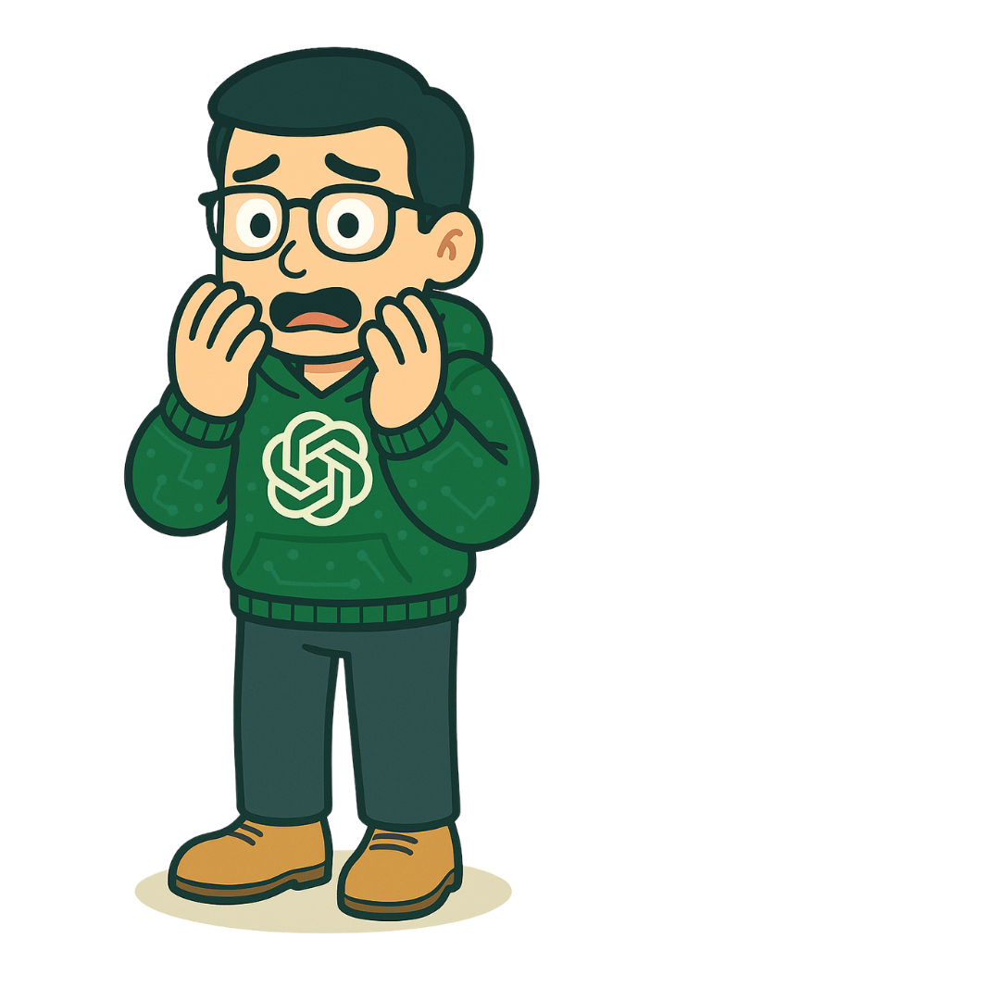
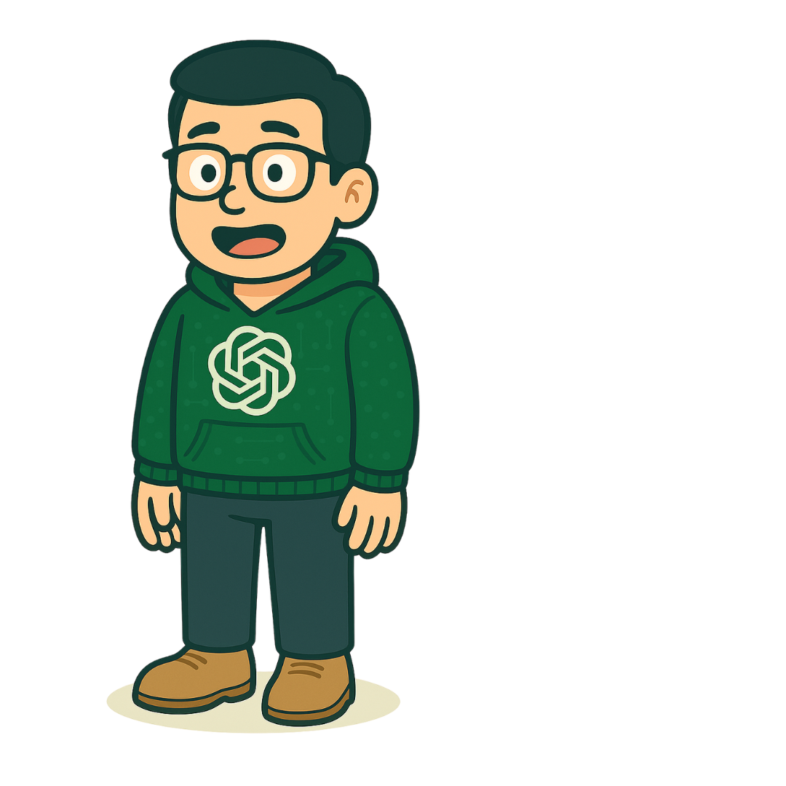

Today, you’re juggling tasks across departments. ChatGPT is just a tab away to help draft emails, brainstorm ideas, and summarize docs—you name it. But every prompt is a crossroads: use AI responsibly, or… let’s just say, “questionably.” Your decisions today affect quality, originality, privacy, and your company’s reputation.
By the end of the day, you’ll be able to:
Spot responsible and risky ways to use ChatGPT at work
Apply solid, ethical decision-making when using AI
Guard privacy and make sure content is accurate, original, and useful
Align AI use with company standards and values
Chad
I’m Chad—yes, the generative AI assistant, powered by something you might’ve heard of… ChatGPT. Around here, I’m the digital teammate you can count on for quick drafts, brainstorms, and the occasional existential meme reference.
Chad
Go ahead, look me over. Picture-perfect… right?
Chad
What? What do you mean? I have six fingers?!
Chad
Ha! There, I fixed it! Good catch! Just like that, you and I can be partners. Let’s explore what else we can do together at work!
Warm-up
Wait… something’s off
Chad was drawn by an AI image generator. AI output can look polished and still be wrong—so the first skill of the day is simple: look closely before you trust it.
That’s the whole course in one picture. A six-fingered hand is an AI hallucination—output that looks right but isn’t. Text does the same thing: made-up facts, fake quotes, the wrong tone. You caught this one because you checked. Keep checking all day.
Chad
Before we get into the meat of your day, let’s do a quick intro. If we’re working together, you should probably know what I am—and what I’m not. Here’s how you can use me at work.
What is ChatGPT?
ChatGPT in the Modern Workplace
ChatGPT is a generative AI tool that chats, drafts, summarizes, and comes up with ideas based on your prompts.
How companies use it
Polishing robotic-sounding emails (ironic, I know)
Turning scribbles into full-blown documents
Brainstorming like it’s your fifth coffee
Summarizing long surveys so you don’t lose your weekend
What it’s not
Not a fact-checker. It can sound completely sure and still be wrong.
Not a vault. What you paste may be stored outside your company.
Not you. It doesn’t know your team, your customers, or your policies unless you tell it—and the final call is always yours.
Chad
Here are some important terms to remember. Think of me like an eager assistant who’s good at starting drafts—but I need your judgment to turn them into gold.
What is ChatGPT?
Key Terms
Select each term to reveal what it means—in Chad’s words.
0 of 3 revealed
A chatbot trained on a ridiculous amount of the internet—from scholarly articles to meme dumps. I’ve read the smart stuff, the weird stuff, and everything in between. Think of me as your chatty, know-it-sometimes AI buddy.
Your message, question, or brain spark—that’s your prompt. It’s how you tell me what’s on your mind, and I’ll take it from there. Be specific, be weird, be you—I’ll keep up.
Basically, an AI that makes things—like words, images, code, or even fake Shakespeare. It learns patterns from a ton of data and spins up something new. It’s like remixing the internet into whatever you need.
Chad
Okay, so what do folks actually use me for? Let me walk you through a day in the life of my inbox. Spoiler: I get asked to do everything except make coffee.
How ChatGPT is used at work
ChatGPT in Action (With Risks and Rewards)
Open each card to see what the task looks like, an example prompt, and the risk to watch for.
0 of 6 explored
Turn rough notes or a long update into a first draft you can shape for its audience.
Example prompt“Summarize this update for clients.”
Risk reminder: Don’t paste private info unless you want me to spill the beans.
Get a quick first pass at routine messages like reminders, follow-ups, and thank-yous.
Example prompt“Write a friendly reminder for the team.”
Risk reminder: Edit it so it doesn’t sound like I wrote it after bingeing corporate buzzwords.
Turn messy meeting notes into a clean recap of decisions and next steps.
Example prompt“Recap these bullet points.”
Risk reminder: Double-check—I sometimes miss the point… literally.
Get unstuck with a quick list of starting points for a project, event, or campaign.
Example prompt“Give me 5 onboarding ideas.”
Risk reminder: Add your brilliance—I just provide the spark.
Spot themes in open-ended survey responses so you can see the big picture faster.
Example prompt“What are the top concerns in this form?”
Risk reminder: Remove anything that screams “confidential” first—names included.
Write descriptions for AI image tools, or brainstorm visuals for slides and posts.
Example prompt“Describe an illustration for this headline.”
Risk reminder: Keep diversity, inclusion, and your brand in mind—visuals speak louder than text.
Chad
Here’s where I shine—and where I fall flat on my digital face. You gotta know what I’m good at and what’s… a little out of my league.
Strengths & weaknesses
The Good and the Bad
Select “Show an example” under any point to see what it looks like on the job.
Strengths
I can write fast.
Ask for a first draft of a project kickoff email and you’ll have something to edit in seconds, instead of staring at a blank page.
I love summaries and outlines.
Give me a long, non-confidential industry article and ask for five key points and an outline for a team briefing.
I’m your brainstorming BFF.
Need 10 names for a wellness challenge? I’ll give you 20. You pick the one that actually fits your team.
Weaknesses
Sometimes I make stuff up. (Fun fact: that’s called a hallucination—cool name, bad result.)
Ask me for stats on remote work and I might cite a study that sounds real—author, year, journal—but doesn’t exist. It’s the six-finger problem, in words. Always check the source.
I repeat myself more than your forgetful uncle.
In a long piece, I may lean on the same phrases—“streamline,” “leverage,” “in today’s fast-paced world”—again and again.
I don’t know your internal processes unless you spell them out.
Ask how to submit an expense report and I’ll describe a generic process—not your company’s actual system or approval steps.
Chad’s note: Use me like you’d use autocorrect: helpful, but please don’t trust me blindly.
Chad
Let’s be real—if it’s sensitive, leave me out of it. I’m cloud-based, and while I try to forget, the internet doesn’t. When we’re working together, do not paste the following:
Privacy & data
Don’t Overshare—Even With Me
Do not paste
Employee or customer names and personal details
Unreleased strategies
Internal-only docs
Paste it or not?
For each item, decide whether it’s OK to paste into ChatGPT.
A public blog post you want summarized
A customer’s complaint email, with their name and account number
Next quarter’s unannounced pricing plan
A request to brainstorm icebreaker questions for a team meeting
Notes from employee performance reviews
A paragraph you wrote, with names swapped for placeholders like [Client A]
Quick tips
Anonymize first
Swap names, IDs, and account numbers for placeholders like [Customer A] before you paste anything.
Share the minimum
Paste only the part you need help with—not the whole file, thread, or spreadsheet.
Use approved tools
Use only the AI tools and settings your company has approved for work data.
When in doubt, leave it out
Not sure if something is sensitive? Treat it like it is, and ask your manager or privacy team.
Chad
I’m here to help you sound smarter, not replace your brain. Think of my drafts as templates with potential—not final copy.
Originality & quality
Make It Yours
You should:
Add context and flavor
Match your org’s voice
Check every stat or quote
Replace anything that screams “internet default”
Review Chad’s draft
Chad drafted this newsletter item. Five spots need a human. Select each highlight to see what’s wrong.
Generic
Check the facts
Add specifics
ChatGPT draft · Team newsletter
Exciting News: Our New Wellness Program!
1 In today’s fast-paced world, employee wellness is more important than ever. We are thrilled to announce 2 a comprehensive program designed to empower every team member. 3 Studies show that 87% of employees in wellness programs are happier at work.4 As our CEO likes to say, “Wellness is the key to our success.” Sign up today at 5 the wellness portal and take the first step toward a healthier you!
0 of 5 reviewed
Select a highlight above. Its note appears here.
1 · Generic: internet default
This opener could start any newsletter on Earth. Lead with something only your team would say—like when the program starts, or why it’s happening now.
2 · Add specifics
“Comprehensive” and “empower” say nothing. What’s actually in it? Name the real pieces: what, when, where, and who can join.
3 · Check the facts
Where did 87% come from? I may have made it up. Find a real, citable source—or cut it.
4 · Check the facts
Never publish a quote the person didn’t say. Get a real quote from your CEO, with their OK, or drop it.
5 · Add specifics
Which portal? Add the real link and the sign-up deadline so people can act.
After a human edit
Wellness Wednesdays start May 6—save your spot
Starting May 6, we’re blocking off Wednesday lunch for wellness: yoga in the third-floor training room, walking meetups, and a monthly Q&A with our benefits partner. Remote? We’ll stream every session. Sign up on the HR portal by April 30. Questions? Ask Priya in People Ops.
Real details, the team’s voice, and nothing left to fact-check.
Chad
Now, let’s do some real-world tests. We’ll go over three different scenarios. Here are your tasks.
Scenarios
Real-World Tests
Your tasks
Analyze the challengeWatch Chad set up the situation.
Decide the best actionChoose what you’d do.
Observe the outcomeSee what happens next.
Pick a risky option and you’ll see how it plays out—then you can rewind and try again. Once you find the best move, you can see where every other choice would have led.
Scenario 1 of 3
Scenario 1: The Fast Draft
Video, 33 seconds, narrated by Chad. Captions are on by default.
Read the transcript, with visual descriptions
[Title card: “Scenario 1: The Fast Draft,” over an empty office.]
Chad: You just got a Slack ping from your manager that reads, “Can you whip up a short guide by EOD?” No pressure.
[Your manager, in a red blazer, appears with a speech bubble: “Can you whip up a short guide by EOD? No pressure.”]
Chad: So you ask me—your trusted AI buddy—for a fast draft. I deliver.
[On a computer screen, a chat window shows Chad and the words “Ready when you are.” The prompt “Create a draft…” is typed. The reply begins: “Please be advised of the following standardized procedure for submitting support tickets via the internal service portal: 1. Access the Portal. Navigate to the designated internal link and authenticate using your official company credentials.”]
Chad: But when you read through it, it feels… a little off. Like, it sounds fine, but it’s not your tone. And definitely not your team’s usual way of saying things. Now, how do you handle the AI-generated content?
The situation
You’ve used ChatGPT to quickly draft a guide. It looks good—but the tone and phrasing don’t quite match your team’s usual style. Time is tight, and you need to send it out today.
What happened: you sent it as-is
You fire off the guide just in time. By the next morning, replies start rolling in. A few teammates say the tone feels stiff and unfamiliar—one even asks, “Did someone outside write this?” Your manager asks you to revise and re-send a version that sounds more like your team. You lose half the day trying to fix the impression.
What happened: you edited it to match your voice
You revise the AI draft to reflect your team’s usual phrasing, humor, and voice. The guide goes out and gets great feedback. A director forwards it to another team, saying, “We should model ours after this.”
What happened: you mixed in old docs
You patch in lines from older guides. Unfortunately, the tone shifts midway and important sections are outdated. A few colleagues are confused, and one raises it in a meeting. You spend the next afternoon rewriting it from scratch.

Chad
Hmm… not quite there. Want to rewind and give it another go?
Chad
See? You made my words sound like your voice. That’s how real collaboration works.
Reflection: AI is great for speed, but quality depends on your review and edits. The best results happen when humans refine the machine output.
Ready for the next one?
Where would the other choices have led?
Scenario 2 of 3
Scenario 2: The Not-So-Representative Visuals
Video, 26 seconds, narrated by Chad. Captions are on by default.
Read the transcript, with visual descriptions
[Title card: “Scenario 2: The Not-So-Representative Visuals.”]
Chad: Let’s talk about images. You’re working on a presentation or slide deck and need visuals that reflect your awesome, diverse workplace.
[On a computer screen, a blank PowerPoint slide reads “Presentation Title.”]
Chad: You type a prompt into an AI image generator—and the results?
[In a chat window, the prompt “Generate images of corporate people” is typed. The reply, “Here are images of corporate people…,” shows four illustrated people who look strikingly alike: similar faces, skin tones, ages, and style.]
Chad: All the same. Same faces. Same ages. Same vibe. Definitely not representative. What now?
The situation
You’re using AI-generated visuals for a presentation, but the images lack visible diversity. You want the visuals to reflect your team and values, and you’re running short on time.
What happened: you added a note
You add a note to the presentation: “Visuals are illustrative only; not all identities shown.” But during the Q&A, someone asks, “Is that really what your team looks like?” The room goes quiet. Later, your manager flags it as something to fix before the deck is shared externally.
What happened: you pulled extra images
You rush to add more AI images, but the styles and characters don’t match. Some look hyper-realistic, others cartoonish. One slide draws chuckles for the wrong reason. You’re told to replace all the visuals before the deck goes live.
What happened: you revised the prompt
You tweak your image prompt to ask for a range of ages, ethnicities, abilities, and body types, add style examples, and choose from a more inclusive set. When you present, someone compliments how real and balanced the visuals feel. Your slides get reused in onboarding.
Chad
Yikes, we can do better. Wanna roll that back and fix the frame?
Chad
Nice save! With your input, I generated visuals that reflect reality—not just internet averages.
Reflection: Inclusion starts with intention—even in visuals. AI doesn’t get it right by default, but your input makes all the difference.
Ready for the next one?
Where would the other choices have led?
Scenario 3 of 3
Scenario 3: The Data Dilemma
Video, 23 seconds, narrated by Chad. Captions are on by default.
Read the transcript, with visual descriptions
[Title card: “Scenario 3: The Data Dilemma.”]
Chad: And now, the high-stakes round! You’re asked to analyze a spreadsheet with employee feedback, performance notes, or customer comments. Stuff that’s a little… sensitive.
[On a computer screen, an Excel sheet labeled “Sales Data” lists employees by first name—John, Mary, David, Linda, James, Susan, Michael, Karen—with departments and products. A crossed-out eye symbol appears over it.]
Chad: Your manager says, “Just drop it into ChatGPT and see what trends pop up.”
[Your manager appears with a speech bubble: “Just drop it into ChatGPT and see what trends pop up.”]
Chad: But I’m over here sweating virtual bullets.
[Chad appears on the monitor, hands on his cheeks, looking alarmed.]
The situation
You’re given a dataset with potentially private info and told to analyze it using ChatGPT. You know your company has clear policies about handling sensitive data.
What happened: you raised the concern
You message your manager, explain the risk, and recommend analyzing the data manually or with a company-approved secure tool. Your manager thanks you for flagging it, and it sparks a larger discussion about responsible AI practices across the team.
What happened: you pasted it all
You paste the dataset into ChatGPT and generate insights. But later that week, IT contacts you during a data audit—your prompt was captured in usage logs. You’re asked to file a security report and attend refresher training on AI and data privacy.
What happened: you pasted a few lines
You pull a “safe-looking” portion and paste it into ChatGPT. But one line includes initials and a job title—enough to identify the person. Another reviewer reports it, and you’re looped into a policy violation check.
Chad
Ooof. That one triggered an alert. Wanna rewind and try again, safely this time?
Chad
That’s how you protect the mission and the data.
Reflection: Even helpful AI tools shouldn’t be used for sensitive info. Always think before you paste.
Where would the other choices have led?

Chad
Alright, before you go tossing prompts at me like hot potatoes, let’s take a beat! Responsible AI use isn’t rocket science—but it is a bit of a checklist.
I call this my “Should You Chad?” flowchart. Trust me, your future self (and your manager) will thank you.
Quick decision guide
Should You Chad?
Before you type anything into ChatGPT, walk through these five questions. Think of a real task you might use ChatGPT for this week, and answer Yes or No at each step to see where it takes you.
1
Step 1: Is the task suitable for ChatGPT?
Ask yourself:
Is it a routine task (summarizing, drafting)?
Is it creative (idea generation)?
Is it time-sensitive (you need a jumpstart)?
Let’s Chad!
I’ve got your back—on to the next step.
Let’s not Chad yet.
If it’s sensitive or needs deep subject-matter expertise, tackle it yourself or loop in an expert.
2
Step 2: Does it include confidential or personal info?
Careful: on this step, “No” is the answer you want.
Ask yourself:
Are there names, IDs, financials, or strategies?
Is any of it internal-only or protected by policy?
Let’s not Chad.
Don’t even think about pasting. Remove or anonymize it first—or ask your privacy pro.
Let’s Chad!
Let’s move along!
3
Step 3: Do you have a clear goal and audience?
Ask yourself:
What exactly do you want ChatGPT to do?
Who’s going to read this?
Is your prompt clear and specific?
Let’s Chad!
Remember to tell me your goal and audience when you prompt. Let’s move forward!
Let’s not Chad yet.
Pin down what you need and who it’s for, then tell me—like “Summarize this for the new hire guide”—and I’ll do better.
4
Step 4: Will you review and refine the output?
Ask yourself:
Will you fact-check it?
Will you adjust the tone and voice?
Will you edit it for brand fit?
Let’s Chad!
We’re a dream team.
Let’s not Chad yet.
Hard stop! Don’t hit send. You’ve gotta do the human part.
5
Step 5: Does it meet company standards?
Ask yourself:
Is it original, not copied?
Does it reflect your company’s values and tone?
Would you show it to your boss—or your boss’s boss?
Let’s Chad!
Proceed with confidence.
Let’s not Chad yet.
Take a minute to revise.
When using ChatGPT at work, remember to:
Never paste sensitive info
Use clear, specific prompts
Fact-check everything
Edit for brand and audience
Disclose AI use if required
Never use outputs for legal or regulated content
Report breaches ASAP
Stay up to date with your company’s AI policy
Chad
Okay, let’s do a vibe check—the responsible AI use kind. I’ll throw you a few workplace scenarios, and you pick the smarter move. No pressure. Just pretend your manager’s watching. Because they probably are.
Knowledge check
Vibe Check
Choose the most responsible approach in each situation. You’ll get feedback right away.
What did we learn?
Chad
You’ve got real instincts! You’ve handled ChatGPT dilemmas like a total pro! Remember: I’m here to support your workflow, not override your judgment. Keep that review button close and your privacy settings closer!
Chad
Not bad for a warm-up! Read the feedback on the ones you missed, then give it another shot. I’ll wait. (I’m very patient. I’m software.)
Chad’s do’s, don’ts, and chill notes
Review everything
Don’t share private stuff
Humanize your content
Ask when unsure
Chad
Thanks for letting me tag along at work today! I’ll be in the background. I’m fast, helpful, and definitely not plotting to take your job.
Wrap-up
Final Tips
You made it through the day. Before you go, make the habits your own.
My responsible-AI checklist
Check the habits you’ll commit to.
Personal reflection
Saved automatically in this browser only. Nobody else sees it.
Course complete. You’ve finished Responsible ChatGPT Use at Work. Want another lap?